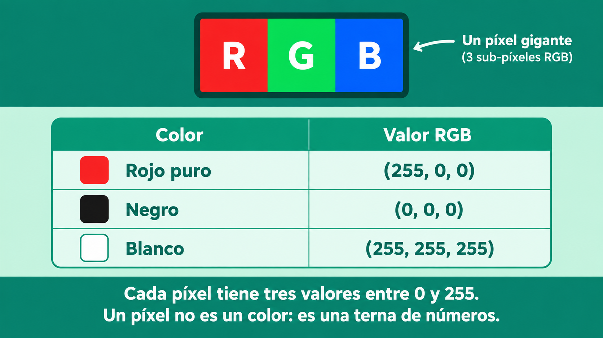
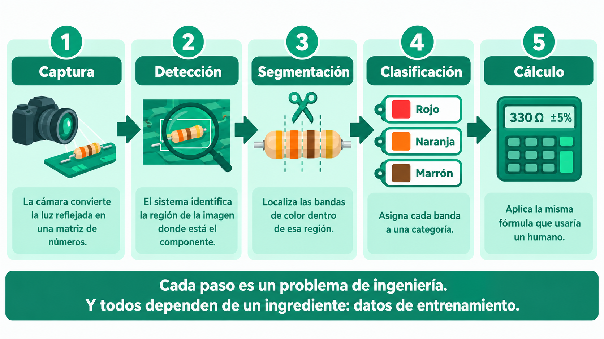
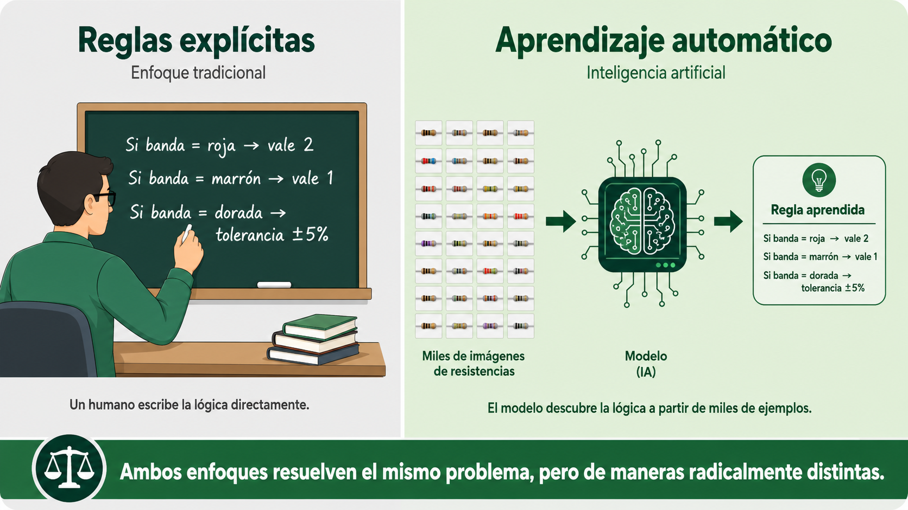
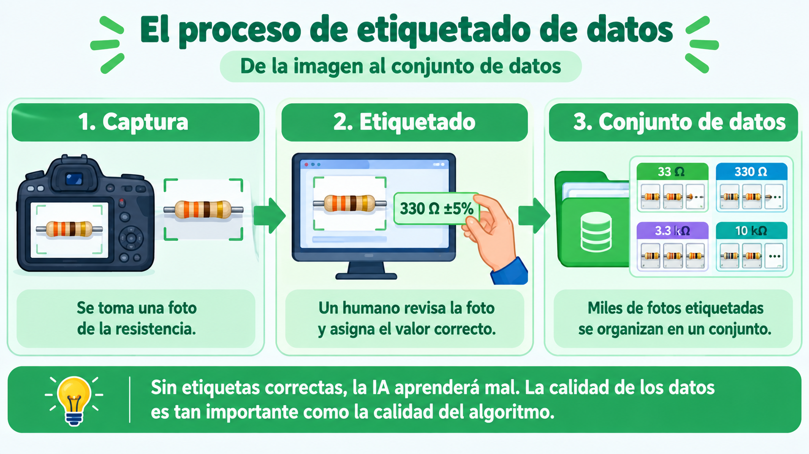
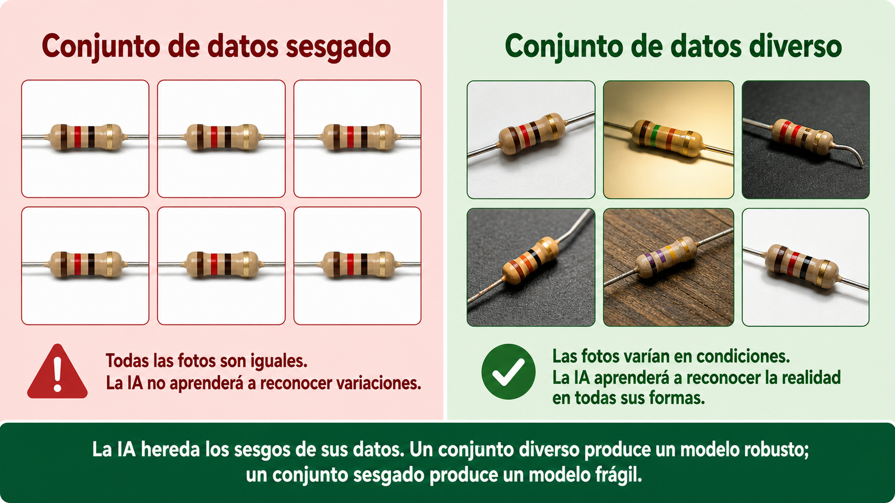
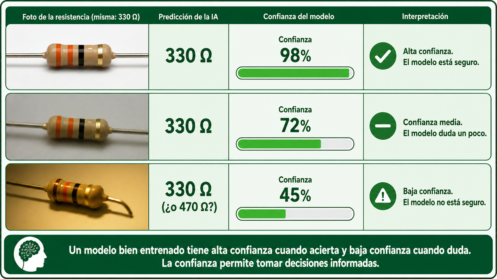
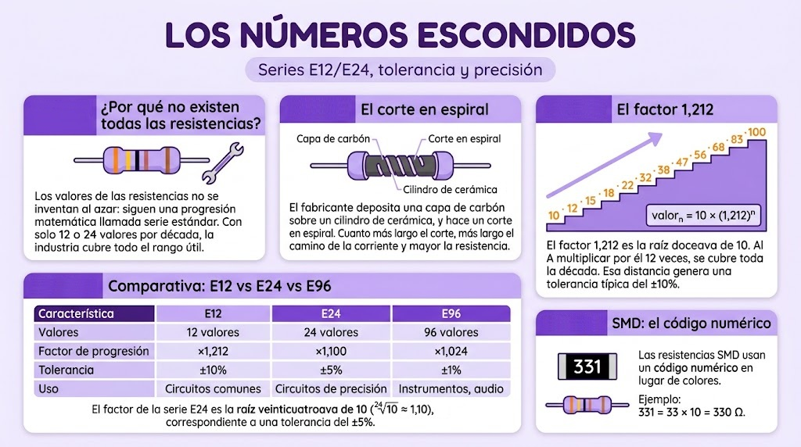

Un ingeniero humano mira una resistencia y, en menos de un segundo, lee sus bandas de colores, calcula el valor y verifica la tolerancia. Para una computadora, ese proceso es extraordinariamente complejo.
Para empezar, una computadora no ve una resistencia. Ve una matriz de números. Cuando una cámara captura una imagen, la divide en miles o millones de píxeles. Cada píxel tiene tres valores numéricos entre 0 y 255: cuánto rojo, cuánto verde y cuánto azul contiene. Eso es el famoso modelo RGB. Así, el rojo puro se representa como (255, 0, 0); el negro, como (0, 0, 0); y el blanco, como (255, 255, 255).
Fíjate en el contraste: en el código de colores de las resistencias, cada banda vale entre 0 y 9 (un solo dígito). En el modelo RGB, cada color vale entre 0 y 255. Cada sistema de codificación elige su rango según lo que necesita representar.

💡 Idea clave: para la máquina, una resistencia no es un objeto físico: es una matriz de números. El trabajo de la visión por computadora es encontrar patrones en esa matriz. El código de colores es justamente un patrón.
El código de colores convierte colores en valores numéricos. Una máquina necesita hacer exactamente lo mismo, pero al revés: convertir una imagen en valores numéricos.
El proceso es sorprendentemente similar al que hace un estudiante con una tabla de colores:
Cada uno de esos pasos es un problema de ingeniería. Y todos ellos dependen de un ingrediente fundamental: datos de entrenamiento. Sin ejemplos previos, la máquina no sabe qué es "rojo" ni qué es "una banda".

Antes de seguir, hay una distinción clave que conviene aclarar. Existen dos maneras muy distintas de lograr que una máquina lea una resistencia:

💡 La diferencia es enorme: con reglas explícitas, tú (el ingeniero) escribes la lógica. Con aprendizaje automático, la máquina infiere la lógica. La consecuencia práctica es que el aprendizaje automático requiere muchos datos y mucho entrenamiento, pero permite resolver problemas que serían imposibles de programar con reglas fijas (como reconocer un rostro o leer una señal de tránsito).
El código de colores es, en esencia, un sistema de etiquetado creado por humanos. Los ingenieros asignaron un número a cada color y acordaron usarlo en todo el mundo. Ahora le pedimos a la IA que haga lo mismo: que aprenda a "etiquetar" colores con valores. Estás viendo la misma idea, casi 100 años después.
Antes de que una IA pueda leer resistencias, necesita aprender qué son. Y para aprender, necesita ejemplos. Muchos ejemplos. Miles o millones. Pero no basta con darle imágenes al azar: hay que etiquetarlas.
El etiquetado de datos (en inglés, data labeling) es el proceso de asignar una etiqueta a cada elemento de un conjunto de datos (en inglés, dataset). Es el trabajo que permite que una máquina aprenda a reconocer patrones.
💡 Ejemplo: si queremos entrenar una IA para leer resistencias, necesitamos:

Aquí hay un principio fundamental: la calidad de una IA depende de la calidad de sus datos. Si las etiquetas están mal, la IA aprenderá mal. Es el famoso principio de "basura entra, basura sale".
Imagina que etiquetas mal una foto: dices que muestra "330 Ω" cuando en realidad muestra "33 Ω". La IA aprenderá que los patrones visuales de esas dos resistencias son iguales. Y cuando le muestres una nueva foto, se equivocará.
💡 Comparación con el código de colores: cuando un estudiante lee mal una banda (por ejemplo, confunde el rojo con el marrón), obtiene un valor equivocado. Lo mismo le pasa a una IA cuando su etiqueta está mal. La diferencia es que el estudiante puede darse cuenta del error y corregirlo; la IA no.
Hay un problema que aparece una y otra vez en el entrenamiento de IA, y que conviene entender bien: el sesgo (en inglés, bias). Un modelo sesgado es un modelo que funciona bien en ciertas condiciones, pero falla en otras.
En el caso de las resistencias, el sesgo puede tomar varias formas:
En todos los casos, el problema es el mismo: la IA hereda los sesgos de sus datos. Un conjunto de datos diverso produce un modelo robusto; un conjunto de datos sesgado produce un modelo frágil.

💡 Más allá de las resistencias: el sesgo es uno de los problemas más importantes de la IA actual. Una IA médica entrenada solo con datos de un grupo étnico puede fallar en otros. Una IA de contratación entrenada con datos históricos sesgados puede perpetuar discriminaciones. La diversidad de los datos no es un detalle técnico: es una responsabilidad ética.
Detrás de cada modelo de visión por computadora hay miles de horas de trabajo humano etiquetando datos. Personas que, foto por foto, dibujan cajas sobre los objetos, asignan categorías y verifican resultados. Es un trabajo silencioso pero fundamental.
Y ese trabajo también tiene un componente ético: quien etiqueta decide qué es importante y qué no. Un sesgo en las etiquetas se convierte en un sesgo en la IA.
La visión por computadora es la rama de la inteligencia artificial que permite a las máquinas "ver" e interpretar imágenes. Es la tecnología que usan los carros autónomos, los sistemas de reconocimiento facial y las cámaras de seguridad inteligentes.
Un modelo de visión por computadora se entrena con miles de imágenes etiquetadas. A lo largo del entrenamiento, el modelo aprende a extraer características de las imágenes: bordes, formas, texturas, colores. Esas características se combinan en capas cada vez más abstractas, hasta que el modelo puede reconocer objetos completos.
💡 Ejemplo concreto: una IA entrenada para leer resistencias aprende, primero, a detectar bordes (los límites de las bandas). Luego, a detectar colores (el rojo, el naranja, el marrón). Finalmente, a detectar patrones completos (una resistencia con banda dorada al final significa tolerancia ±5%).
Aquí hay una diferencia fundamental entre una máquina y un humano. Cuando tú miras una resistencia y dices "esto es 330 Ω", lo dices con certeza. Pero cuando una IA analiza la misma resistencia, no dice "esto es 330 Ω": dice, por ejemplo, "hay 92% de probabilidad de que esto sea 330 Ω".
Esa probabilidad se llama confianza del modelo. Es un número entre 0 y 1 (o entre 0% y 100%) que indica qué tan seguro está el modelo de su respuesta.

💡 ¿Por qué es importante? Porque un modelo bien entrenado tiene alta confianza cuando acierta y baja confianza cuando duda. Si un sistema de seguridad lee "92% resistencias" pero "20% posibles explosivos", sabemos que necesita más datos antes de actuar. La confianza permite tomar decisiones informadas.
A diferencia de un humano, una IA no "entiende" lo que ve. Solo reconoce patrones. Eso la hace vulnerable a varios problemas:
Por eso el entrenamiento con datos diversos es tan importante: la IA debe ver la realidad en todas sus variaciones para poder reconocerla cuando la encuentre.
Una resistencia no vale exactamente 330 Ω: vale aproximadamente 330 Ω. La diferencia entre el valor ideal y el valor real se llama tolerancia, y es un margen de error aceptable. En inteligencia artificial existe un concepto paralelo: la precisión de la etiqueta.
Así como una resistencia de 330 Ω ±5% puede valer entre 313,5 Ω y 346,5 Ω, una etiqueta también tiene un margen de error. Si el etiquetador se equivoca en un 1% de las imágenes, la IA aprenderá con ese 1% de ruido. El resultado no será perfecto, pero puede ser aceptable.
💡 Comparación: la tolerancia en resistencias y la precisión en etiquetas siguen el mismo principio de ingeniería: no se busca la perfección absoluta, sino un margen de error controlado. En ambos casos, asumir que algo puede fallar es lo que permite diseñar sistemas robustos.
Para medir qué tan bien funciona una IA, se usan varias métricas:
Cada métrica captura un aspecto distinto del rendimiento. Un buen ingeniero de IA no se fija solo en una: las combina para tener una visión completa.
Cuando una IA se equivoca, las consecuencias dependen del contexto. Si una IA de laboratorio lee mal una resistencia, el peor caso es un circuito que no funciona. Pero si una IA médica se equivoca al leer una radiografía, o una IA de tráfico no reconoce un peatón, las consecuencias son graves.
Por eso la precisión de las etiquetas no es un detalle técnico: es una responsabilidad. Quien entrena una IA debe asegurarse de que los datos sean correctos, diversos y representativos de la realidad.
Vas a experimentar el proceso de etiquetado de datos desde dentro. La misión es crear un mini conjunto de datos de resistencias que podría usarse para entrenar una IA.
💡 Dos formas de hacer este taller: puedes hacerlo en el aula (con resistencias del kit y un celular para fotos) o llevarlo a casa si tienes acceso a un dispositivo con cámara. Si no tienes cámara, puedes hacer una versión simplificada dibujando las resistencias.
| # Foto | Resistencia | Valor | Tolerancia | Condiciones |
|---|---|---|---|---|
| 1 | ||||
| 2 | ||||
| 3 | ||||
| 4 | ||||
| 5 | ||||
| 6 | ||||
| 7 | ||||
| 8 |
Cuando termines, escribe una nota breve al final de tu hoja de registro. No es una tarea, es una reflexión. Puedes escribir sobre:
Un conjunto de datos con 10,000 fotos de resistencias etiquetadas por humanos puede entrenar una IA para leer resistencias. Pero ¿qué pasaría si todas las fotos tuvieran la misma iluminación? ¿Qué pasaría si todas fueran de la misma marca? ¿Qué problemas tendría esa IA en el mundo real?
💡 ¿Sabías que…? Algunos de los conjuntos de datos más grandes de visión por computadora tienen más de 14 millones de imágenes etiquetadas. Y cada una fue anotada por una persona. Detrás de cada IA hay un trabajo humano enorme, a menudo invisible.
⚠️ Seguridad: si usas un celular para tomar las fotos, no expongas la pantalla a golpes ni la mojes. Y si usas resistencias dentro de un aparato, primero desconecta el aparato y retira las pilas.
Durante décadas, la visión por computadora fue un campo pequeño y frustrante. Los investigadores lograban avances, pero los modelos fallaban en el mundo real. Nadie sabía por qué. Hasta que una investigadora se dio cuenta de que el problema no era el algoritmo: era la falta de datos.
Fei-Fei Li nació en China y emigró a Estados Unidos a los 16 años. Trabajó en empleos humildes mientras estudiaba, y llegó a ser profesora de ciencias de la computación en Stanford. Cuando empezó a investigar visión por computadora, el campo estaba estancado.
En 2007, Li tuvo una idea que muchos consideraron una locura: en lugar de mejorar los algoritmos, recolectar un conjunto de datos gigantesco de imágenes etiquetadas. Creó ImageNet, un proyecto que reúne millones de fotos, cada una etiquetada por un humano. Ella y su equipo no mejoraron el algoritmo: cambiaron los datos.
El resultado fue transformador. En 2012, un modelo entrenado sobre ImageNet (llamado AlexNet) arrasó en una competencia internacional de reconocimiento de imágenes. La visión por computadora dio un salto cuántico, y desde entonces todos los grandes avances de la IA moderna han descansado sobre conjuntos de datos masivos.
El principio que Fei-Fei Li demostró con ImageNet se aplica hoy a todos los modelos de IA, incluidos los que generan texto o imágenes. La calidad de un modelo depende de la calidad y la cantidad de sus datos de entrenamiento. Los "modelos gigantes" como ChatGPT deben su poder, en gran medida, a la enorme cantidad de texto con el que fueron entrenados.
Y detrás de cada conjunto de datos hay miles de personas etiquetando, revisando y corrigiendo. Es el trabajo silencioso que sostiene toda la inteligencia artificial moderna.
La lección: a veces la innovación no está en mejorar el algoritmo, sino en cambiar los datos. Fei-Fei Li no resolvió el problema de la visión por computadora con una fórmula mágica: lo resolvió con millones de ejemplos etiquetados. Y eso cambió la historia de la IA.
Fuentes: archivos históricos de ImageNet y biografías de la Universidad de Stanford.
Dale play y en 7 minutos descubrirás:
💡 Escúchenlo en familia y comenten qué otras tareas hacen las máquinas hoy que antes solo hacían los humanos.